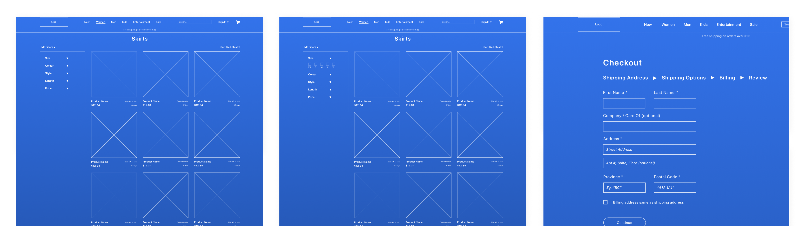
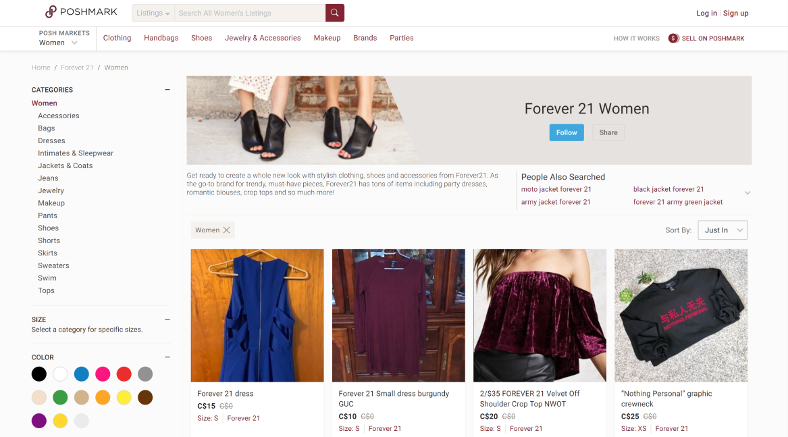
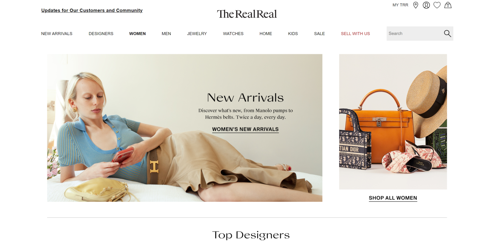
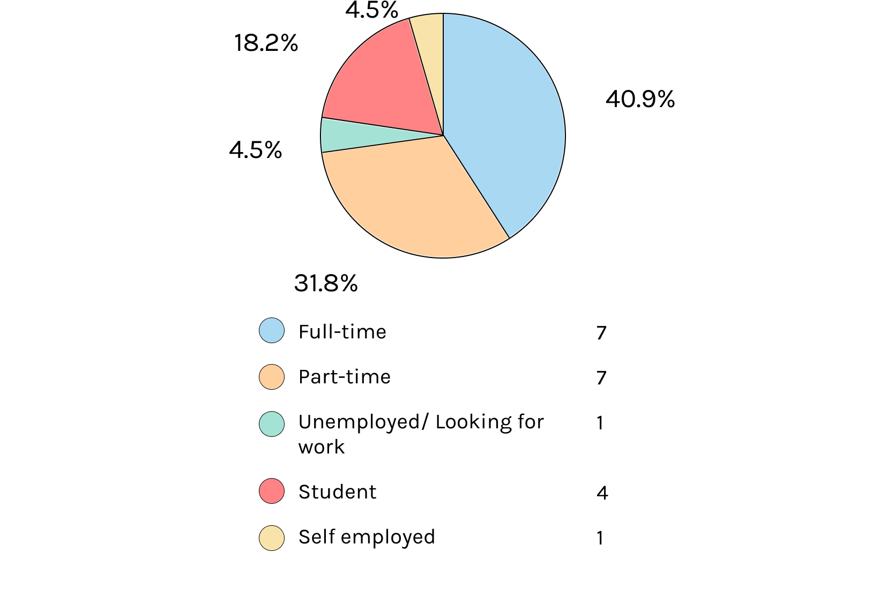
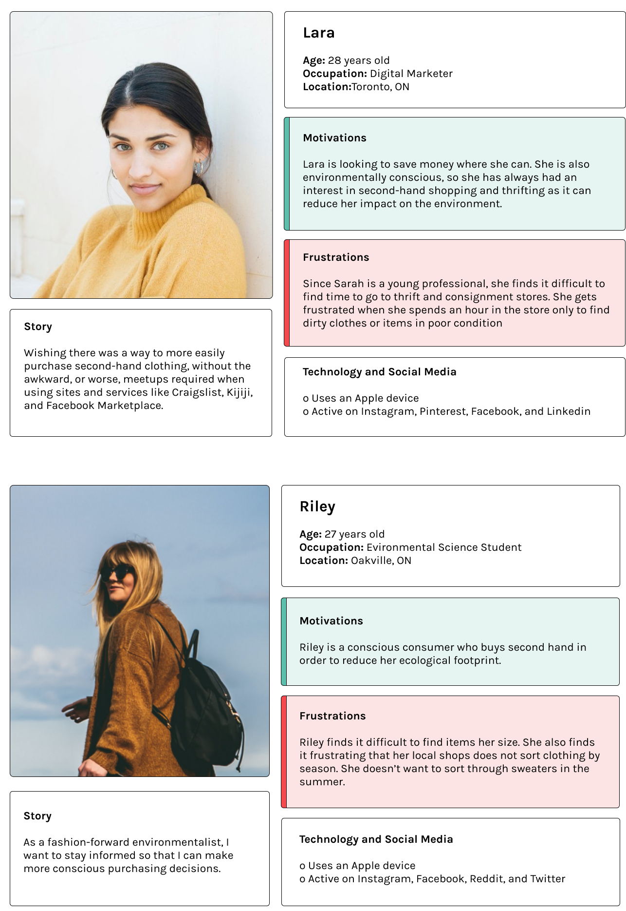
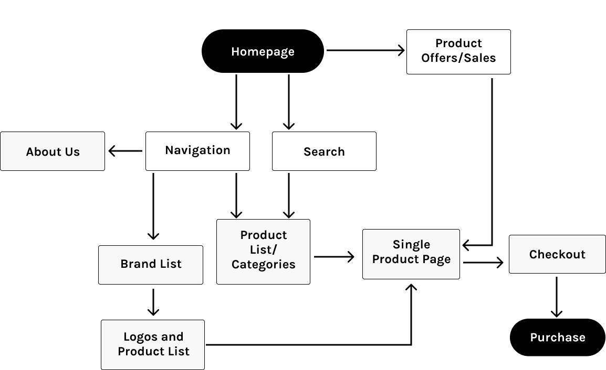
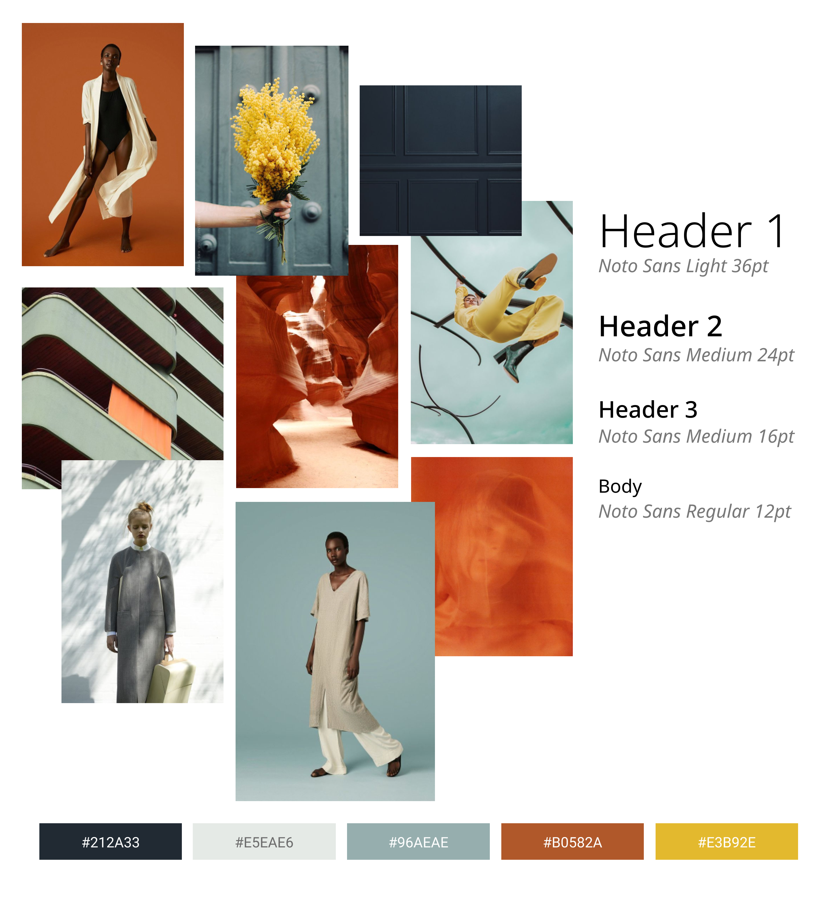

nolongertheirs
my role
Market Research
Branding
Product Thinking
Interaction Design
Prototyping
Branding
Product Thinking
Interaction Design
Prototyping
team
1 Designer (myself)
passion project
passion project
tools
Figma
Invision
Invision
duration
Apr - May 2020
Context
I love thrifting and buying second hand. If you want to know more about my passion for
thrifting and how I started my own small business click here.
Problem
The second hand market is something that holds dear in my heart, but I think that there's a
lot of untapped territory. As you can read above, there is so much potential and good that
comes from buying and selling second hand, and I wanted to contribute.
Overview
Solution
A web platform that streamlines the thrifting experience, leverages the ever-growing
scale of the secondhand market, and pushes towards low waste, sustainable
shopping.
view mid-fidelity prototype here
Research
Competitive Analysis
To gain a better understanding of the branding and architecture of thrifting and consignment
product pages, I explored the websites of Poshmark and The RealReal.
Poshmark

Community
A merge between an offline and online experience allows Poshmark’s
online marketplace to mimic real life gatherings, where users can physically trade,
chat and share their passions. “The community interacts with each other over one million times a day by liking, commenting and sharing each other’s listings. [They're] obsessed with Poshmark, opening the app 7-8 times a day and spending 20-25 minutes in the app daily,” -Manish Chandra, Founder/CEO
The RealReal

Clean
The RealReal illustrates second-hand clothing with a clean layout, showcasing their
products with a modern and elegant interface. Thrifting is known to have a bad rep with
cleanliness, but The RealReal does a great job at portraying their experience in a
clean, refreshing way.
User Survey and Interview
My questions revealed the users' overarching demographic, shopping
habits, as well as their views on thrifting, both positive and negative.
I deployed a survey of 12 questions to 22 thrift/vintage fashion enthusiasts via Facebook groups and subreddits.
I deployed a survey of 12 questions to 22 thrift/vintage fashion enthusiasts via Facebook groups and subreddits.
What is your current work status?

What factors motivate you to thrift?
What factors deter you from thrifting?
What would make secondhand shopping more appealing?
Personas
I took all my research, developed insights, and devised two personas with
accompanying user stories. These personas guided me throughout my design process to
ensure that I was designing for my users’ specific goals and needs.
Lara's motivations and frustrations about thrifting echoed the majority of what my survey respondents had to share. Lara was easy to begin designing for, as I felt as though I all already knew Lara or shared similar thoughts to her.
Riley was a bit more of a special case. Her persona is quite specific, however, the data showed that a surprising amount of thrifters were environmentalists. Although it came to me as a surprise, it was important for me to consider Riley as a target persona.
Lara's motivations and frustrations about thrifting echoed the majority of what my survey respondents had to share. Lara was easy to begin designing for, as I felt as though I all already knew Lara or shared similar thoughts to her.
Riley was a bit more of a special case. Her persona is quite specific, however, the data showed that a surprising amount of thrifters were environmentalists. Although it came to me as a surprise, it was important for me to consider Riley as a target persona.

Feature Prioritization
I then decided on the features most needed on the platform to address the users' pain
points and to enhance their thrift store experiences. I also ideated upon potential features
that my users could benefit from and prioritized them based on the project scope.
Journey Mapping
Before I began sketching, I created a site map, customer journey map, and user flow to
visualize the user experience that I was constructing. I find that it’s easier for me to
sketch my ideas when I already know what information I’m provided, how it’s going to be
organized, and roughly what order they should be presented to my users.
Site Map

User Flow

The flow allowed for searching for a product via categories, filtering down the listed products, and adding to the shopping cart. After it was in the cart, the user would be able to check out as a guest and after completing the order, create an account. This user flow could easily be adapted to fit any product on the site, making it a great starting point for the next phase of our design process.
Low-fidelity
Sketches + Wireframes
As I reached the design stage of my project, I began sketching low-fidelity
wireframes on paper and later digitized them in Figma. Paper prototypes allowed me to
quickly layout pages that would be in my mid-fidelity prototype.
Mid-fidelity
try it yourself! --> here
Design Direction
Principles
Before considering how the brand might look, I wanted to determine how the brand
should feel. I created an inception board depicting the space, colour, shape, and movement of my
design determined by the target audience and their goals as users.
The key principles of minimal, empowering, and modern guided my visual treatments to have a contrasting colour palette and minimalist, trendy illustration accents, combined with a clean, classic typeface and layout.
The key principles of minimal, empowering, and modern guided my visual treatments to have a contrasting colour palette and minimalist, trendy illustration accents, combined with a clean, classic typeface and layout.

Visual Design
I wanted the site to seem elegant and modern with a fresh and classy vibe to
resonate with our fashion-forward users. I used teal and sienna, with accents of yellow and a
sans-serif font (Noto) to emulate the brand’s high quality and sustainability-focused vision.

Logo
What speaks louder towards a business’ brand than their company name and logo? I
chose nolongertheirs, to emphasize the beauty of second hand clothing: an article that is
no longer theirs, but now yours.
To be Continued
The mid-fidelity prototype is currently being tested! From there, I plan on making thoughtful
design choices based off of the data yielded from testing. This will then lead me to iterations
of a high fidelity product that aligns with my UI principles and UI direction. Be sure to keep
an eye out for the remainder of this project!
Future Considerations
Even before testing, I already have a few features in mind that I would like to
implement in future iterations:
Further expanding the countdown feature, surfacing items soon to leave the store on
the
homepage
Responsive site design, to further aid in convenience for users on a variety of
devices
Developing the item and monetary donation feature